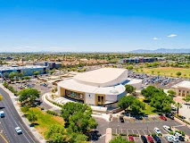
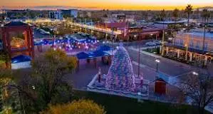
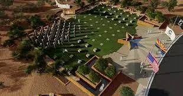
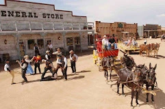

The Arizona Railway Museum
The Arizona Railway Museum has an extensive collection railroad rolling stock and artifacts. It was founded and incorporated as a non-profit organization in 1983.
Chandler Center For The Arts
Chandler Center for the Arts is located in Chandler, Arizona and is jointly owned by the City of Chandler and the Chandler Unified School District. The Chandler Center for the Arts functions dually as the home theater for Chandler High School and the arts center for the City of Chandler.
Downtown Chandler
Downtown Chandler is a vibrant district known for its modern Chandler Center for the Arts, as well as an array of boutiques and colorful street art. North Arizona Avenue is a haven for shops, businesses, hip brew pubs and diverse eateries, along with its tree-lined namesake park, and artwork at the popular Vision Gallery.
Veterans Oasis Park
Outdoor recreation area with trails & a playground, plus a visitor center with educational programs.
Rawhide Western Town
Themed events venue offering private & public events with Wild West gunfights & live country music.